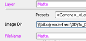
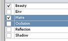
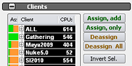

The submitter is used to setup
After everything is set up, the scene is send to the server.
Here are two ways to get scene data into the submitter:
Scene Parser |
You start the rrSubmitter manually, then you use the Load button to load a scene file. After you have selected a scene file, a Scene Parser Plugin loads all Basic Scene Information (Scene name, Camera, Sequence length, Image File ) from the scene file. |
via Plugin (recommended) |
RR offers plugins for most of the 3D and compositing applications. (See Renderer if there is a plugin for your application) The plugin starts the rrSubmitter. Some of the plugins are reading all Basic Scene Information (Scene name, Camera, Sequence length, Image File ) from the scene you are working in, and send this data via a .xml file to the rrSubmitter. |
You can then select select each layer in the left layer table and check the scene information.
If you have selected multiple Layers,
then the submitter shows you differences between the selected Layer in pink.

After all scene information is in the submitter, you have to choose which Layer you want to render.
Just check the layers you want to render
.
You sometimes want that only some of your clients should render a job.
For example if only a few machines have enough memory or have a special plugin installed.
(If you need selections of clients more often, you can create groups in rrConfig).
Just select a group or multiple clients and hit "Assign, only".
This assigns the selection and deassigns all other clients.
The first column shows you the assignment,
green = assigned
orange = deassigned

Client Groups can be set in rrConfig
Of course, you have to submit the job to the server.
For a detailed description of the Submitter, check the rrSubmitter help.
For a description of the settings, check Job Settings.
You can submit jobs to the server via the rrSubmitterconsole.
The commandline submitter works the same as the UI Submitter (even the same commandline flags), but you cannot change anything via the UI.
Jobs are directly send to the server without any user interaction.
All basic scene information is either set via a scene parser plugin or via commandline flags.
See rrSubmitterconsole for all flags and usage.
RR submission job files are .XML files with all information required for a job.
Please read rrJob submit xml file.
The job render parameter (Priority, Verbose, Quality ) and Royal Render options (Which client, Post-scripts, Notification ) are (usually) not set by a submission job file.
If you want to change these options for a submission, you have to change the submitter default settings.
This can be done
All available options can be seen via the rrSubmitter defaults editor.